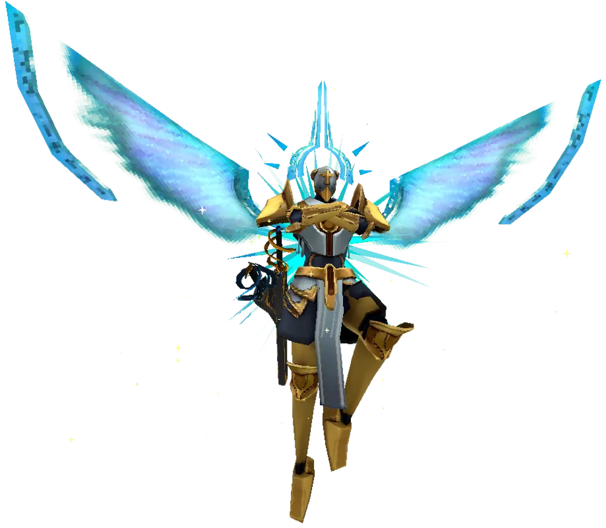

Overview
Gabriel, known as the Judge of Hell and the Will of God, is one of the most powerful angels in ULTRAKILL. Initially revered for his unshakable faith and martial prowess, Gabriel becomes a tragic figure after his defeats to V1, leading to his ultimate rebellion against the Heavenly Council. His story weaves themes of devotion, betrayal, and existential purpose.

Appearance
Gabriel’s divine armor is adorned in white and gold, symbolizing his status as a high-ranking angel. His breastplate and greaves are intricately detailed, while golden tassels and a radiant floating halo emphasize his celestial origins. He has black skin with golden markings, a grey loincloth, and ethereal blue wings that add to his divine aesthetic. His helmet features a prominent golden cross, with breathing holes and ornamental designs that highlight his status as a warrior of God.
History
Gabriel's long and storied history reflects his rise, fall, and eventual rebellion:
- King Minos: Gabriel executed King Minos for reforming Lust into a utopia, earning him the title of Judge of Hell.
- Sisyphean Insurrection: He beheaded King Sisyphus, quelling an uprising and solidifying his reputation as a strategic and ruthless leader.
- Faith Questioned: After losing to V1 in Gluttony, the Heavenly Council deemed him a heretic, giving him 24 hours to restore his honor by killing the machine.
- Rebellion: Realizing the Council's hypocrisy and the futility of his actions, Gabriel killed the Council in Heaven, severing ties with their oppressive rule.
In-Game Appearances
Gabriel appears twice as a boss in ULTRAKILL:
- [3-2: IN THE FLESH]: Gabriel fights to prevent V1 from delving deeper into Hell. His arrogance and anger shine through as he initially tries to reason with V1 before resorting to combat.
- [6-2: AESTHETICS OF HATE]: After losing his divine light, Gabriel is unhinged and furious, blaming V1 for the destruction of Hell. He delivers an iconic monologue before their second confrontation.
Gabriel’s likeness is scattered across Hell in murals, paintings, and writings, reflecting his influence and the conflicting perceptions of his legacy.
Combat Abilities
Phase 1
- Quick Strikes: Gabriel performs rapid melee attacks that demand precise dashing and parrying to avoid.
- Light Beams: He summons divine projectiles that track and explode upon impact.
Phase 2
- Unrelenting Assault: Gabriel becomes faster and more aggressive, combining melee combos with ranged attacks.
- Perfect Hatred: His anger fuels him, leading to unpredictable and devastating attacks.
Quotes and Dialogues
Iconic Monologue
"Machine… I will cut you down, break you apart, splay the gore of your profane form across the stars! I will grind you down until the very sparks cry for mercy! My hands will relish ending you here and now!"
Other Notable Lines
- "Limbo... Lust... All gone... With Gluttony soon to follow."
- "My strength is unrivaled, my will unyielding, yet you… persist."
- "All that remains… is PERFECT, HATRED."
Aftermath
Following his rebellion, Gabriel retreats to Hell, severed from God’s light and aware of his impending death. His final act of defiance against the Council cements his legacy as a complex and tragic figure in ULTRAKILL’s narrative.
Strategies
General Tips
- Parrying: Gabriel’s melee attacks can be parried for massive stagger opportunities.
- Mobility: Use slide-hopping and dashes to evade his relentless attacks.
- Weapon Choice: The Malicious Railcannon is excellent for breaking through his defenses.
Phase 2 Focus
During Phase 2, focus on managing distance and punishing his extended attack animations with precise firepower.